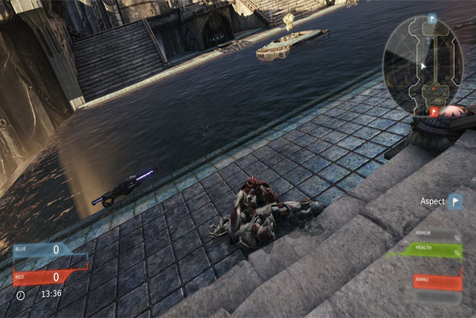

How To Plan A Game:
by Chandradhar
I know it really seems to be a very simple task. The major difference between gaming companies like EA and Indie developers isn't just budget. It is executing the plan which was initially made. These companies plan before starting anything. They solidly plan the whole project including the exceptions and then execute it. If the plan fails, they will lose money and most importantly time.
Most of them may not consider planning necessary but making a game with no planning is like building a house with no foundations.
How to Plan:
1. Preproduction:
1. Prepare a solid story. Don't leave out any part of the story or start the project with a story which hasn't got an ending. Also decide the genre of the game You may later think: "That snag in the development had come at which my plan had become a little vague"
2. Start level layout on the paper. Never start designing the level digitally before planning it. You can improvise it while designing. Divide the level into
a. Beginning - where the player starts.
b. Obstacles - enemies or puzzles
c. Objectives - kill the antagonist, find the key or rescue someone.
d. Ending - How it ends i.e. cutscene or end credits etc.
e. Don't have grudge on the player. The difficulty level and the excitement are much closely related. If the game is too easy, the player loses his focus and if the game is too hard to play, he has many other games to play. People play games for entertainment.
3. Prepare the list of characters, assets, sounds required in the game.
4. Design the characters on the paper before you or your team members design them.
Ex: The antagonist is very fat and has a big scar on his face. He always wears armor. He has very cruel looks.
Considering all these properties of him, his character and role is designed.
2. Technical Planning:
1. Decide how you want the game to look. If the story is a serious one, first person or third person camera would be good. If the concept is a casual one, side scrolling type of game suits well.
2. Decide the target platforms. Will you make the game for PC, XBox 360, Playstation 3 or wii? Also keep the system requirements in mind. A casual game requiring a high end system is a major disadvantage and could be affecting the sales.
3. Is the game in your skill level?? If yes, then it isn't a problem but if it is higher than your level, you may have problems developing it.
4. Finalize the softwares and developing tools you want to use in the game development.
Ex: Unreal Engine for game design, Blender for character development, Photoshop for texture editing.
3. Work as a unit:
Divide the work into parts and arrange regular team meetings to assess the progress of the game.